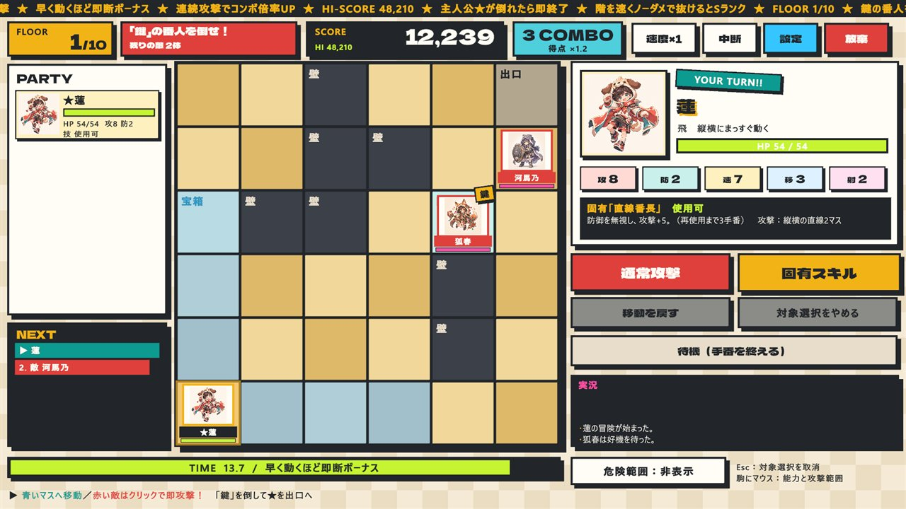
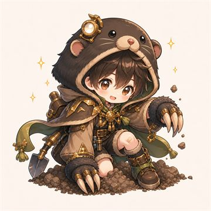
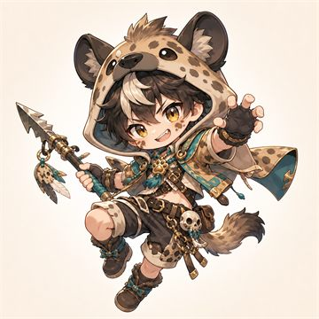
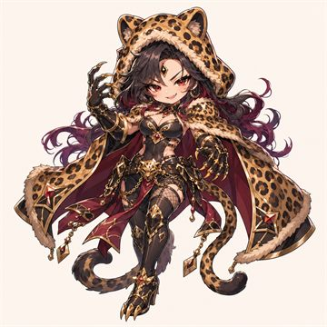
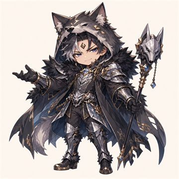
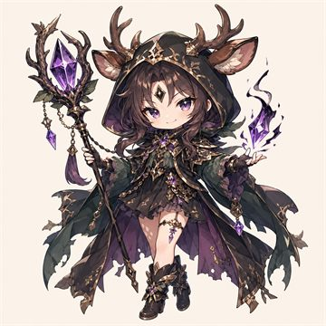
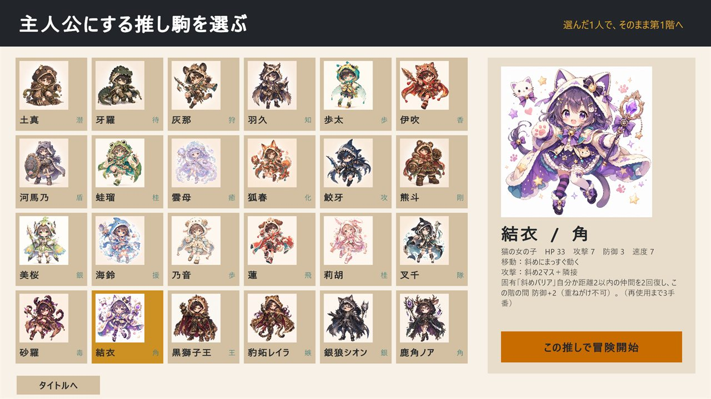
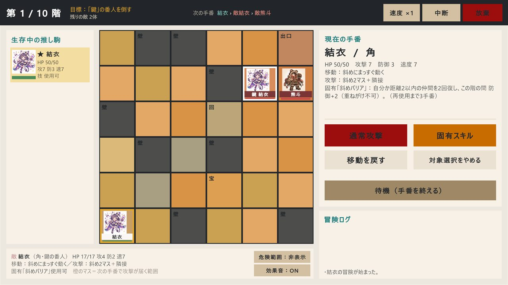
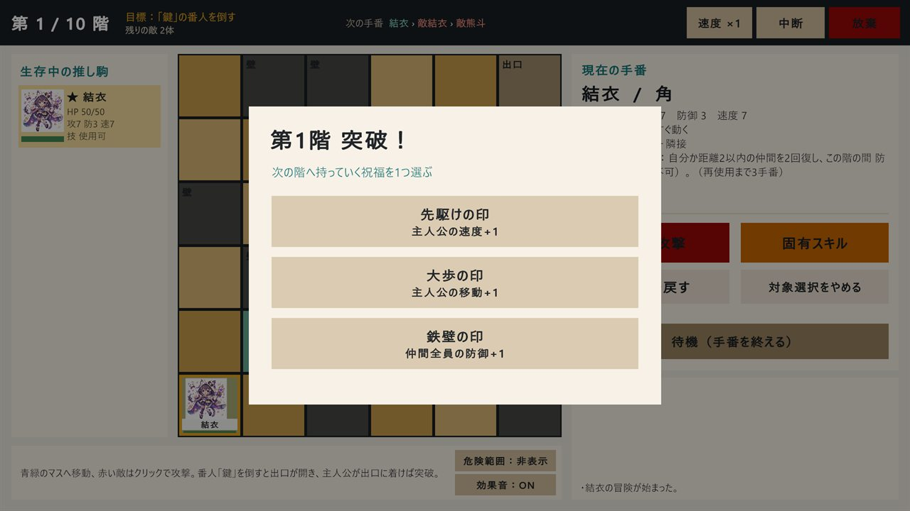

- 無料試験版
- 盤上ローグライク
- 将棋風の動き
- 一発勝負
推し駒battle ／ v1.0-trial.2
推しが倒れたら、 即終了。
動物コスプレの推し駒1人を主人公に、毎回形が変わる6×6の盤面を全10階。将棋風の動きで「鍵」の番人を倒し、主人公を出口へ。
- 10階
- 6×6盤面
- 24推し駒
- 7祝福
- 0円

青緑のマスへ移動 赤い敵はクリックで攻撃 番人「鍵」を倒すと出口が開く 主人公が出口に着けば突破
将棋
風
HP
制
01
3秒でわかる推し駒battle
これを10回。
-
1
推しを1人選ぶ
最初は蓮・結衣・美桜・歩太の4人。タイトルから3クリックで第1階。
-
2
「鍵」の番人を倒す
番人を倒すと出口の封印が解ける。敵の全滅は不要。
-
3
主人公を出口へ
金色の出口に着けば突破。祝福を3つから1つ選んで次の階へ。
5階幹部10階黒獅子王
02
数字で見る
ぜんぶゲームのデータから。
- 10階ランダム生成。冒険ごとに壁・罠・宝箱・回復マスの配置が変わる
- 6×6盤面は36マス
- 24人主人公にできる推し駒
- 24種固有スキル（1人1つ）
- 1回主人公が倒れたら、その瞬間に冒険終了
- 7種階を越えるたびに選ぶ祝福
- 3回救出チャンス（2・4・7階）
- 4人最大パーティ
- 60%階層突破で生存者が最大HPの60%回復
- 6手先まで手番の順番が見える
- ×4敵ターンの早送り（×1／×2／×4）
- 8タイプ駒の動き（歩・飛・角・桂・香・王・銀・援）＋成り
- 30分1回の冒険の目安（調整中）
03
知っておくべき掟
やばい ／ うれしい
やばい取り返しがつかない
- 主人公が倒れると、その瞬間に冒険終了
- 仲間が倒れると、その冒険の間は永久に離脱（蘇生なし）
- 罠・回復・宝箱・救出のマスを踏んだ移動は「移動を戻す」ができない
- 6階からは通常の敵も固有スキルを使ってくる
うれしいちゃんと助けもある
- 階を突破すると、生存者が最大HPの60%回復
- 駒にマウスを乗せると、能力と攻撃が届く範囲が見える。「危険範囲」で全敵の範囲を常時表示
- 歩・香・桂は盤の奥で「成り」、その階の間だけ金の動きに
- 途中で「中断」して、次回「続きから」再開できる（自動保存）
04
推し駒図鑑 全24人
乗せる・タップで表情が変わる。
数値は基礎値。主人公になったときの補正や祝福、成りで冒険中に変わります。救出した推し駒は生きて連れ帰ると、幹部と黒獅子王は初めて倒すと、次の冒険から主人公に選べます。
-
飛 最初から 蓮
犬の男の子／飛型
- HP
- 36
- 攻
- 8
- 防
- 2
- 速
- 7
移動 3 射程 2
直線番長防御を無視し、攻撃+5。（再使用まで3手番）
純粋無垢で一直線。結衣とは張り合うライバル。
-
角 最初から 結衣
猫の女の子／角型
- HP
- 33
- 攻
- 7
- 防
- 3
- 速
- 7
移動 2 射程 2
斜めバリア自分か距離2以内の仲間を2回復し、この階の間 防御+2（重ねがけ不可）。（再使用まで3手番）
気分屋で誇り高い。蓮にはつい対抗心が出る。
-
銀 最初から 美桜
鳥の女の子／銀型
- HP
- 38
- 攻
- 8
- 防
- 4
- 速
- 6
移動 2 射程 1
かばう宣言自分か距離1以内の仲間を4回復し、この階の間 防御+4（重ねがけ不可）。（再使用まで3手番）
自由で快活な関西弁。空気を変えるのが得意。
-
歩 最初から 歩太
虫の男の子／歩型
- HP
- 34
- 攻
- 5
- 防
- 2
- 速
- 5
移動 2 射程 1
応援シャワー最も傷ついた仲間を7＋攻撃の半分 回復。（再使用まで3手番）
気弱で慎重。怖くても仲間のためなら一歩進む。
-

土真
モグラの潜行役／桂型
- HP
- 39
- 攻
- 6
- 防
- 5
- 速
- 6
移動 2 射程 1
もぐり道攻撃+4で攻撃し、相手の攻撃と速度を1下げる。（再使用まで3手番）
物静かで地下道のように考えが深い。
-
待 救出で解放 牙羅
ワニの迎撃役／銀型
- HP
- 46
- 攻
- 8
- 防
- 5
- 速
- 4
移動 1 射程 1
デスロール待機攻撃+7の強襲。（再使用まで3手番）
寡黙で忍耐強く、一撃を待ち続ける。
-

灰那
ハイエナの狩人／飛型
- HP
- 36
- 攻
- 8
- 防
- 2
- 速
- 8
移動 3 射程 1
いただきスカベンジ攻撃+5の強襲。（再使用まで3手番）
機を見るのが早い現実主義者。
-
知 救出で解放 羽久
フクロウの策士／角型
- HP
- 33
- 攻
- 6
- 防
- 3
- 速
- 6
移動 2 射程 2
夜目の解析攻撃+4で攻撃し、相手の攻撃と速度を1下げる。（再使用まで2手番）
夜ほど頭が冴える分析家。
-
香 救出で解放 伊吹
猪の男の子／香型
- HP
- 40
- 攻
- 8
- 防
- 2
- 速
- 7
移動 3 射程 2
一直線ヒート攻撃+6の強襲。（再使用まで3手番）
情熱一直線。止まることを敗北だと思っている。
-
盾 救出で解放 河馬乃
カバの盾役／銀型
- HP
- 50
- 攻
- 6
- 防
- 7
- 速
- 3
移動 1 射程 1
どっしり沼守り自分か距離1以内の仲間を4回復し、この階の間 防御+4（重ねがけ不可）。（再使用まで3手番）
おおらかで動じない。仲間の前に立つ。
-
桂 救出で解放 蛙瑠
カエルの女の子／桂型
- HP
- 35
- 攻
- 7
- 防
- 2
- 速
- 9
移動 2 射程 1
けろジャンプ攻撃+4で攻撃し、相手の攻撃と速度を1下げる。（再使用まで3手番）
予測不能な変人。常識より面白さを優先する。
-
癒 救出で解放 雲母
クラゲの癒し手／援型
- HP
- 34
- 攻
- 4
- 防
- 4
- 速
- 6
移動 2 射程 2
ぷかぷかヒール最も傷ついた仲間を11＋攻撃の半分 回復。（再使用まで3手番）
ふわりと優しく、傷ついた空気まで包む。
-
化 救出で解放 狐春
キツネの変化役／援型
- HP
- 34
- 攻
- 6
- 防
- 3
- 速
- 8
移動 3 射程 1
こんこん入れ替え攻撃+5で攻撃し、相手の攻撃と速度を1下げる。（再使用まで3手番）
悪戯好きで戦場の位置関係を操る。
-
攻 救出で解放 鮫牙
サメの強襲役／香型
- HP
- 37
- 攻
- 9
- 防
- 2
- 速
- 8
移動 3 射程 1
ブラッドバイト防御を無視し、攻撃+6。（再使用まで3手番）
獲物を逃さない鋭い勝負師。
-
剛 救出で解放 熊斗
クマの守護役／銀型
- HP
- 52
- 攻
- 10
- 防
- 4
- 速
- 3
移動 1 射程 1
ベアハグガード自分か距離1以内の仲間を4回復し、この階の間 防御+4（重ねがけ不可）。（再使用まで4手番）
豪快で面倒見がよい大黒柱。
-
援 救出で解放 海鈴
イルカの支援役／援型
- HP
- 35
- 攻
- 5
- 防
- 4
- 速
- 7
移動 2 射程 2
ハーモニーコール最も傷ついた仲間を9＋攻撃の半分 回復。（再使用まで3手番）
人懐こく、声を合わせるのが好き。
-
歩 救出で解放 乃音
羊の男の子／歩型
- HP
- 42
- 攻
- 5
- 防
- 5
- 速
- 4
移動 2 射程 1
ふわふわ前進自分か距離1以内の仲間を3回復し、この階の間 防御+3（重ねがけ不可）。（再使用まで3手番）
のほほんと穏やか。急がない強さを知っている。
-
桂 救出で解放 莉胡
兎の女の子／桂型
- HP
- 34
- 攻
- 6
- 防
- 3
- 速
- 9
移動 2 射程 1
ぴょんステップ攻撃+5の強襲。（再使用まで2手番）
可愛いものが大好き。跳ねるほど調子が上がる。
-
隊 救出で解放 叉千
シャチの隊長／王型
- HP
- 42
- 攻
- 8
- 防
- 4
- 速
- 6
移動 2 射程 1
オルカフォーメーション自分か距離1以内の仲間を3回復し、この階の間 防御+3（重ねがけ不可）。（再使用まで3手番）
冷静な指揮官。群れの生存を最優先する。
-
毒 救出で解放 砂羅
サソリの毒使い／角型
- HP
- 34
- 攻
- 7
- 防
- 2
- 速
- 7
移動 2 射程 2
しっぽの一刺し攻撃+5で攻撃し、相手の攻撃と速度を1下げる。（再使用まで3手番）
辛辣だが観察眼が鋭い。
-

豹妬レイラ
豹の女性幹部／援型
- HP
- 45
- 攻
- 10
- 防
- 3
- 速
- 9
移動 3 射程 2
空気悪くする攻撃+7で攻撃し、相手の攻撃と速度を1下げる。（再使用まで3手番）
華やかな嫉妬を力に変える黒金会の策士。
-

銀狼シオン
狼の男性幹部／銀型
- HP
- 52
- 攻
- 9
- 防
- 6
- 速
- 7
移動 2 射程 1
沈黙の圧攻撃+6で攻撃し、相手の攻撃と速度を1下げる。（再使用まで3手番）
沈黙と規律を重んじる黒金会の処刑人。
-

鹿角ノア
鹿の女性幹部／角型
- HP
- 44
- 攻
- 11
- 防
- 3
- 速
- 8
移動 3 射程 3
宿題追加防御を無視し、攻撃+7。（再使用まで3手番）
冷徹な知性で盤面を支配する黒金会の参謀。
-
王 撃破で解放・10階の王 黒獅子王
ライオンの男性首領／王型
- HP
- 72
- 攻
- 13
- 防
- 7
- 速
- 7
移動 2 射程 2
校則ビーム攻撃+9の強襲。（再使用まで3手番）
黒金会を率いる絶対王。敗北すら勧誘に変える。
05
駒の動き
将棋風。でもHP制のターンバトル。
駒移動できる攻撃が届く両方（図はイメージ。移動力・射程はキャラごとに違います。上が前）
-
歩
歩型図は歩太（移動2・射程1）
移動前へまっすぐ（移動力まで）
攻撃射程以内（上下左右の距離）
歩太・乃音
-
飛
飛型図は蓮（移動3・射程2）
移動縦横にまっすぐ（移動力まで）
攻撃縦横の直線（射程まで）
蓮・灰那
-
角
角型図は結衣（移動2・射程2）
移動斜めにまっすぐ（移動力まで）
攻撃斜めの直線（射程まで）＋上下左右の隣
結衣・羽久・砂羅・鹿角ノア
-
潜
桂型図は土真（移動2・射程1）
移動前方へ桂馬跳び（4か所）
攻撃桂馬跳びの位置（後ろ向きも）
土真・蛙瑠・莉胡
-
香
香型図は伊吹（移動3・射程2）
移動前へまっすぐ（移動力まで）
攻撃前方の直線（射程まで）
伊吹・鮫牙
-
隊
王型図は叉千（移動2・射程1）
移動周囲8方向（移動力まで）
攻撃射程以内（上下左右の距離）
叉千・黒獅子王
-
銀
銀型図は美桜（移動2・射程1）
移動縦横に2マスまで・斜めに1マス
攻撃射程以内（上下左右の距離）
美桜・牙羅・河馬乃・熊斗・銀狼シオン
-
癒
援型図は雲母（移動2・射程2）
移動周囲8方向（移動力まで）
攻撃射程以内（上下左右の距離）
雲母・狐春・海鈴・豹妬レイラ
-
金
成ると金歩・香・桂が盤の奥で成る（その階の間だけ）
移動前・斜め前・横・後ろへ1マス
攻撃射程以内（上下左右の距離）
歩・香は最奥の段、桂は奥から2段以内で成る
正規の将棋ではありません。駒の種類は推し駒ごとに決まっていて、同じ盤面でも主人公の動きで攻め方がまるで変わります。
06
祝福 全7種
階を越えるたび、3つから1つ。
大命の印
仲間全員の最大HPとHP+10
鉄壁の印
仲間全員の防御+1
猛攻の印
仲間全員の攻撃+2
再起の印
仲間全員のHPを20回復
大歩の印
主人公の移動+1
先駆けの印
主人公の速度+1
知略の印
仲間全員のスキル再使用を1短縮
大歩の印は、移動が増えても意味のない主人公のときは候補に出ません。
07
実際の画面
ぜんぶ本物のスクショ。

選ぶ主人公選択で、移動・攻撃範囲・固有スキルを確認 戦う青へ移動、赤い敵はクリックで即攻撃 
読む敵に乗せると、能力と次に届く範囲が出る 
盛る突破後は祝福を3つから1つ
FREE TRIAL
今すぐ無料で遊ぶ
試験版 v1.0-trial.2 ／ Windows 10・11（64bit）・Android 8.0以上（64bit）
zip・約103MBWindows版をダウンロード- 展開zipを好きな場所に展開（すべて展開）
- 起動フォルダ内の OshigomaBattle.exe を起動
- 警告が出たら「WindowsによってPCが保護されました」→「詳細情報」→「実行」個人制作で署名をしていないため表示されます
- 入手スマホのブラウザでボタンを押し、APKをダウンロード
- 許可「提供元不明のアプリ」を聞かれたら、そのブラウザ（またはファイルアプリ）を許可
- インストールAPKを開いてインストール。横画面で遊ぶGoogle Play外の試験配布です。実機での動作は確認中
- 対応
- Windows 10 / 11（64bit）・Android 8.0以上（64bit端末、横画面）
- 操作
- マウス（Escで取り消し）／タップ（戻るボタンで取り消し）
- 1回の冒険
- 約30分を目安に調整中
- 価格
- 無料（試験版）
- セーブ
- 自動保存。「中断」して再開できる
- 音
- BGM・効果音あり（それぞれON／OFF）
- 制限時間
- 1手番15秒（なし／30秒／8秒にも変更可）
- 記録
- スコア・コンボ・階層ランク・ハイスコア
08
よくある質問
先に答えておく。
お金はかかる？
試験版は無料です。
スマホやMacで遊べる？
Windows版（10・11、64bit）とAndroid版（8.0以上、64bit端末）があります。Android版はGoogle Play外のAPK配布で、実機での動作は確認中です。iPhone・Mac・ブラウザ版はありません。
起動すると警告が出た
個人制作で署名をしていないため「WindowsによってPCが保護されました」と出ます。「詳細情報」→「実行」で起動できます。
途中でやめられる？
自動保存です。「中断」でタイトルに戻り、次回「続きから」で再開できます。
主人公が倒れたらどうなる？
その冒険は終わりです。ただし、図鑑・最高到達階・クリア回数・解放した推し駒は残ります。
感想や不具合はどこに送る？
GitHubのIssuesへどうぞ。
09
更新情報
- 配信Android版（APK・試験版 v1.0-trial.2）を追加。スマホの横長画面にも合わせた。
- 配信試験版 v1.0-trial.2 を無料公開。制限時間・スコア／コンボ・階層ランク・BGMを追加し、画面と演出を一新。
- サイト紹介ページをリニューアル。推し駒図鑑（全24人）、駒の動き、祝福一覧を追加。
- 配信試験版 v1.0-trial.1 を無料公開。
- 開発敵の攻撃範囲表示、成り、敵の固有スキル、結果画面などを追加し、難易度を調整。